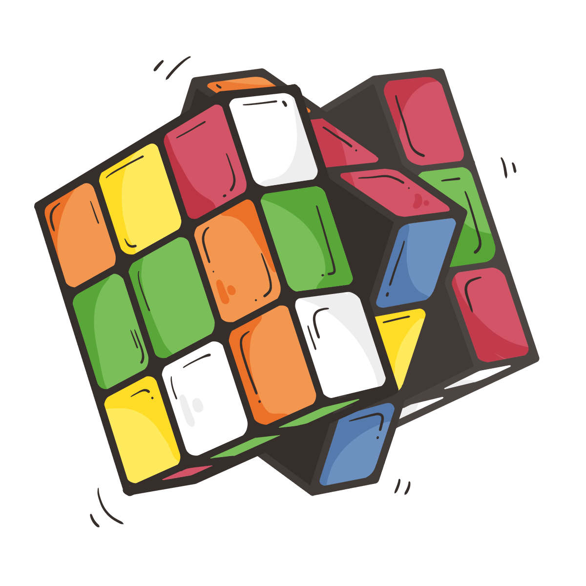

Olá, sou Kayque Lopes, estudante de tecnologia 👋
- 🌱 Estudante de Tecnologia da Informação
- 🤖 Acadêmico na UFERSA - Semestre 2026.1
- 🧠 Futuro Engenheiro de Software
- 💻 Apaixonado por tecnologia
- ⚔️ Desejo criar jogos e escrever livros no futuro
- 🏹 Gosto muito de desenhar e escutar música 🎶
- 📺 Adoro assistir animes e ler mangás no meu tempo livre.

💡 Sobre Mim
Meu objetivo é desenvolver projetos de alta qualidade, aprimorando meus conhecimentos em tecnologia, sempre em busca de excelência e inovação. Aplico criatividade na resolução de problemas, mantendo uma abordagem disciplinada e eficiente na gestão do tempo.
Este perfil é uma caixa de surpresas onde a magia da tecnologia da informação acontece em cada linha de código escrita.
Soft Skills
Resolução de Problemas
Foco em lógica e análise para encontrar soluções eficientes em desafios complexos.
Trabalho em Equipe
Experiência em colaboração ativa para o desenvolvimento de projetos acadêmicos e técnicos.
Criatividade
Aplicação de pensamento original no design de interfaces e na estruturação de novos sistemas.
Comunicação
Habilidade em sintetizar e apresentar ideias de forma clara, tanto em apresentações quanto em código.
📊 Estatísticas do GitHub
💻 Habilidades e Tecnologias
Linguagens e Frameworks


Banco de Dados e Análise
Ferramentas